Product launch
re:Fresh
Developing a meal kit that makes healthier, nutritious meals more accessible for busy working adults.
Outcome
Extended produce shelf life to 10 days and sold ~100 kits in 2 months, with 80%+ of customers rating quality 4 or 5 stars. Repeat orders stayed low, which led to a pivot.
- Project
- Self-initiated
- Jun 2021 – May 2022
- Team
- Antonius Aditya
- Stefani Elizabeth
- My role
- Shelf-life R&D
- Packaging
- Go-to-market
Why I started
Back home in Indonesia, healthy food costs more, so most adults fill up on rice, noodles and fried food with little protein. I only saw how big that gap was after moving to the US for college. I wanted to make nutritious meals more accessible, and cooking fun.
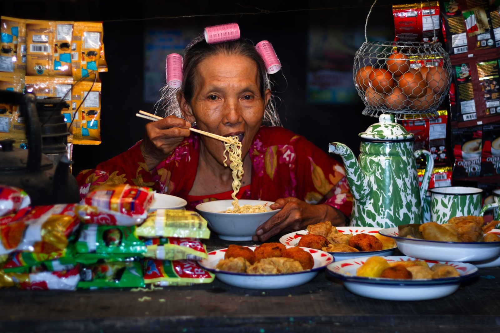
Maintaining freshness
Fresh vegetables don’t last long in Jakarta’s climate, and busy people don’t always cook when they plan to. We needed our kits to stay fresh for at least a week.
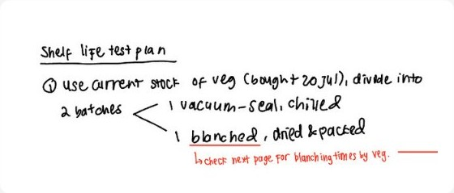
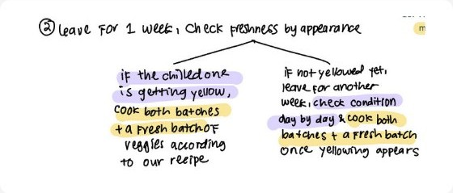
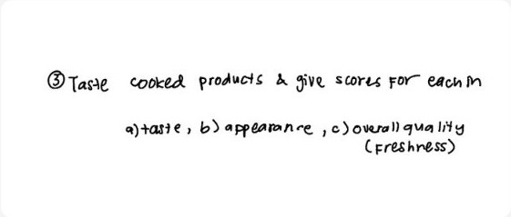
Packing for transit & easy use
Meat goes at the bottom to stay cold, veggies on top so they don’t get crushed or wet, and the recipe card sits on top so it’s the first thing consumers see. I lost the original card files, so I rebuilt the recipe card from photos of the real kits.
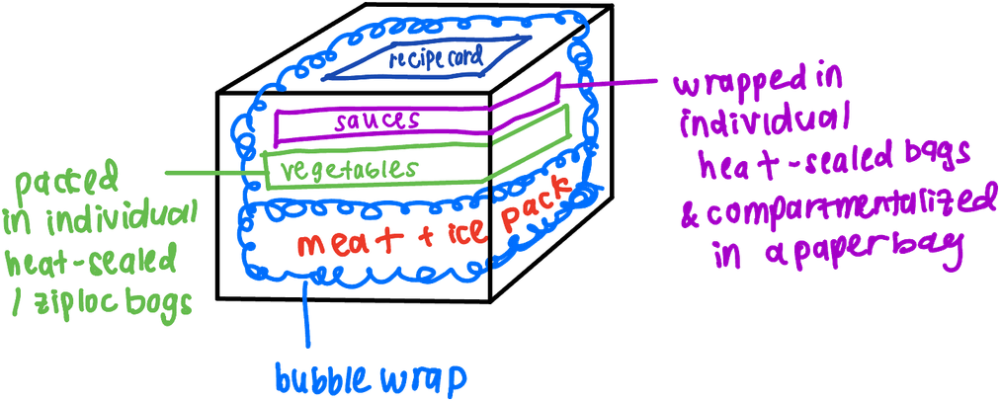
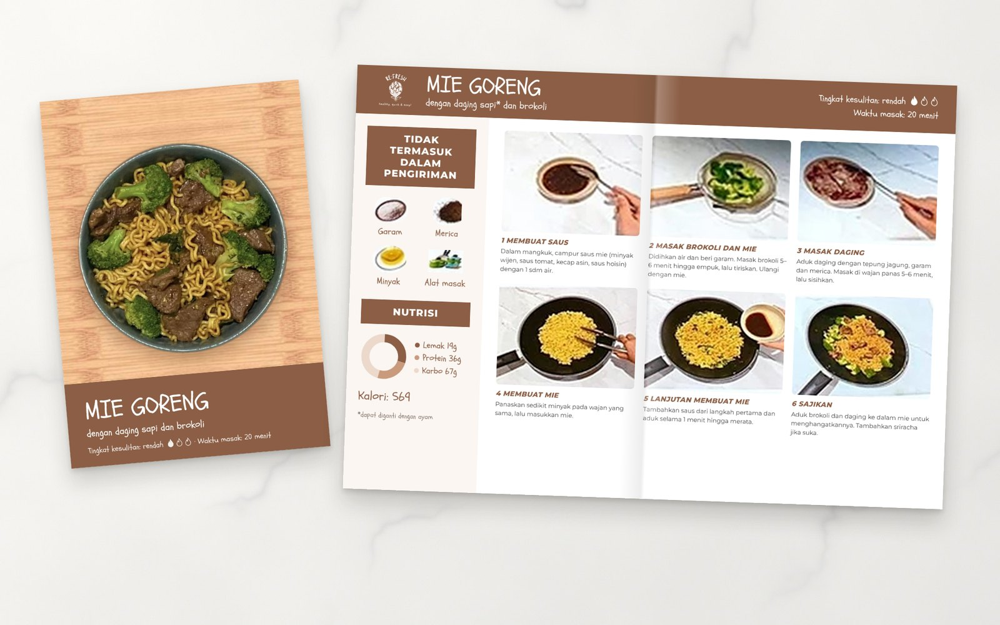
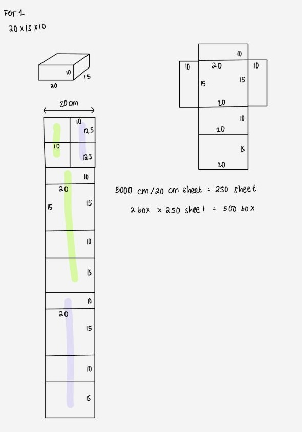
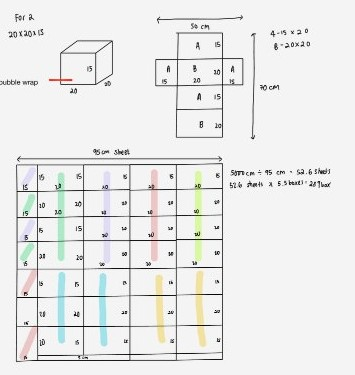
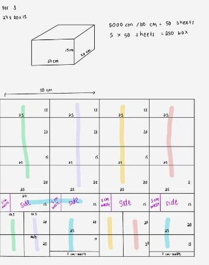
Launching the storefronts
Indonesians shop for everything on e-commerce platforms, while food delivery apps are where they already buy food. We launched on both to make buying as easy as possible, and e-commerce sold better.
To find early adopters, we sent free kits to food influencers in exchange for reviews. Most never replied. Only one or two influencer friends made us a video.
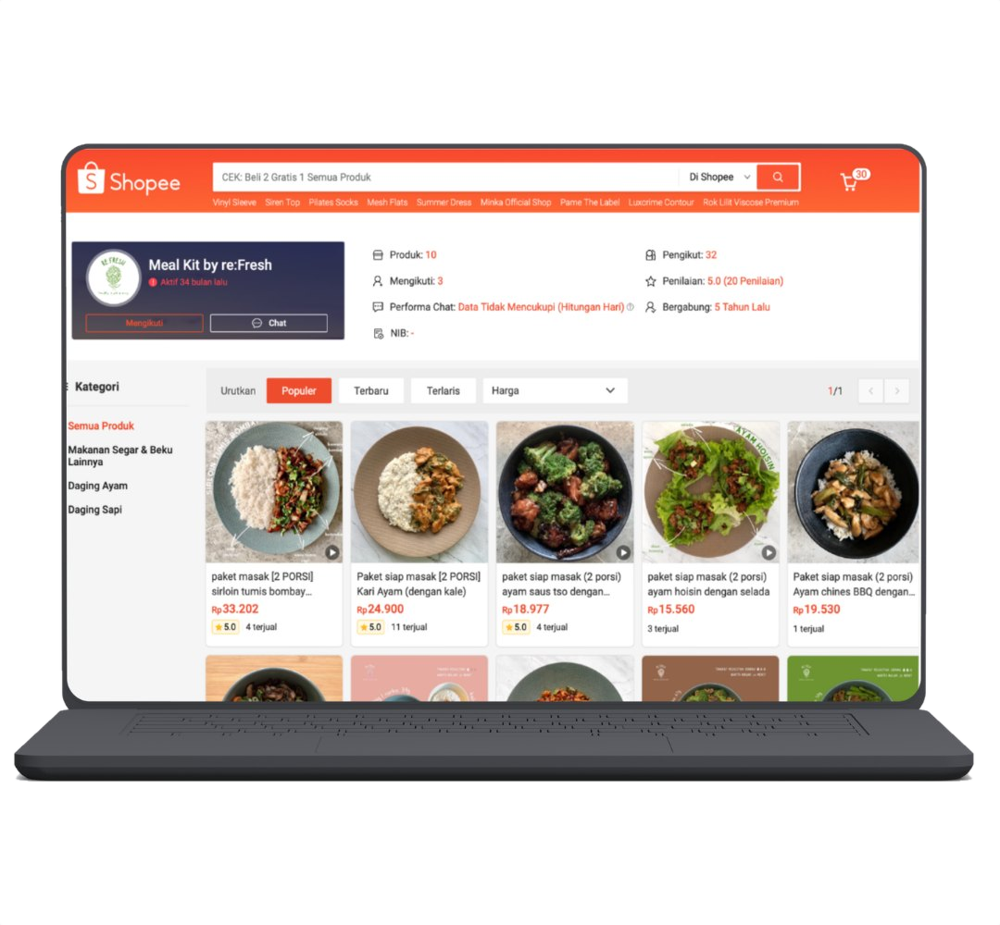
Brand in use
The thank-you card and die-cut stickers are new pieces I mocked up to show how the brand could extend.
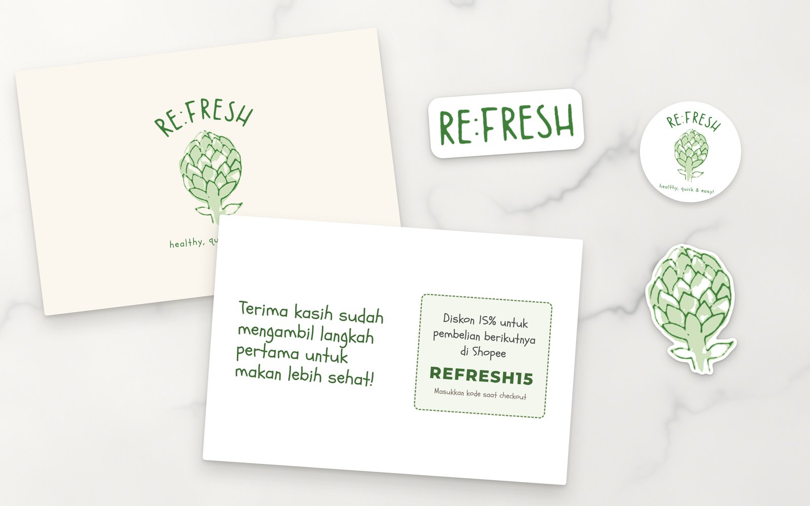
What we sold
~100
kits in 2 months
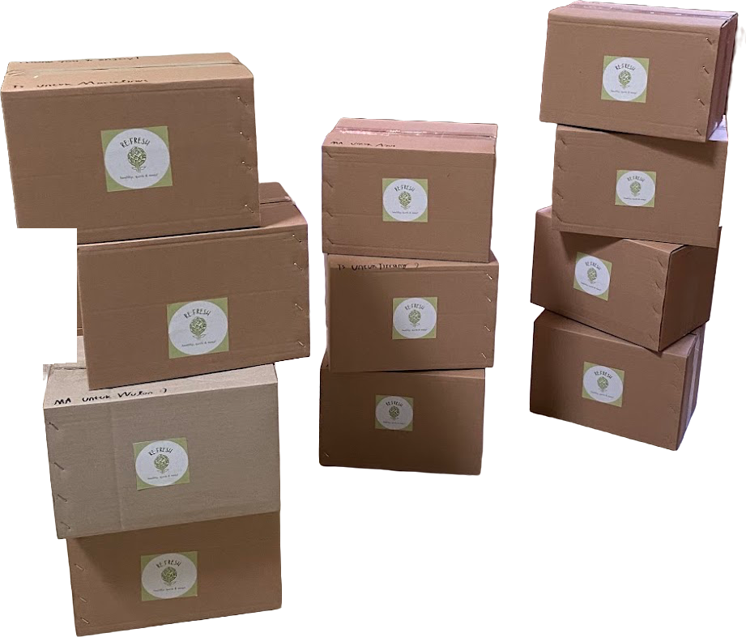
What went wrong
About 100 orders in 2 months, but very few customers came back.
Reflection
Busy adults wanted affordable, healthy food, but convenience came first. The buyer also isn’t always the cook, since many households have a housemaid. Next time, I’d talk to target users about how they really live, not just friends.
What came next
My co-founder pivoted re:Fresh into a physical restaurant concept, and I left to focus on my studies and research.